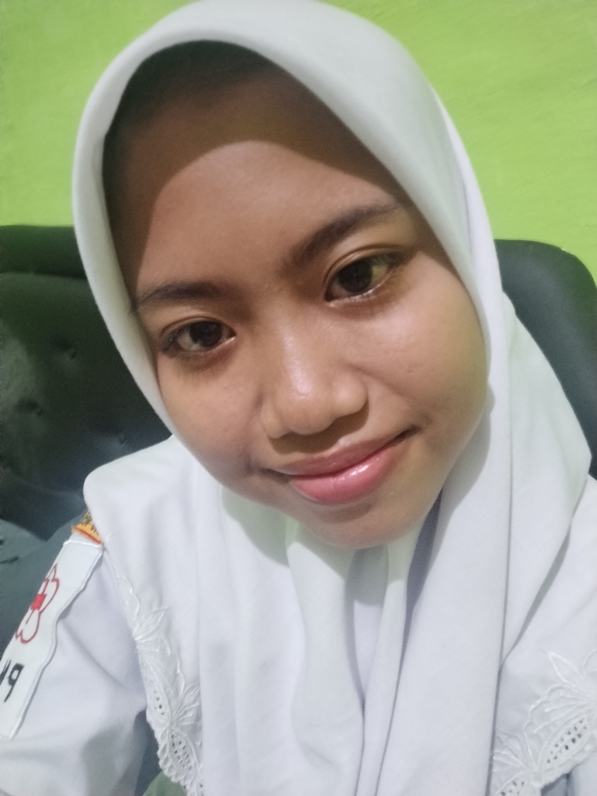

Zahrotus Sita Kurniatin
Kelas: X Keperawatan
Sekolah: SMKS Kesehatan Yannas Husada Bangkalan
Hobi: Menonton drama dan series
"Karena pada akhirnya, aku sadar bahwa aku tidak akan pernah bisa menjalani skenario hidup ini sendirian jika mereka tidak ada di dalamnya."